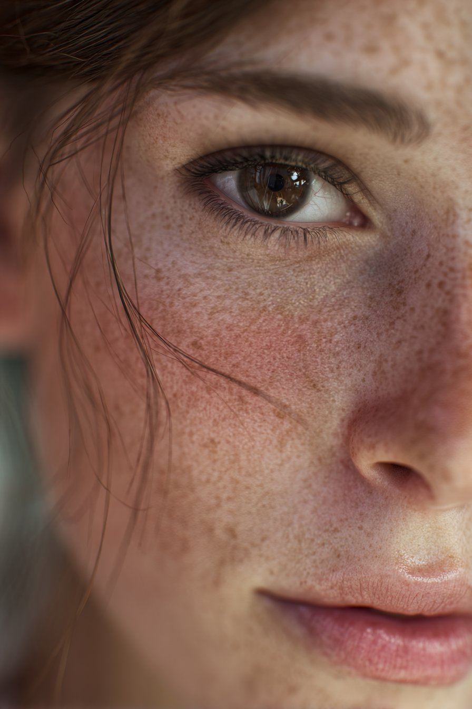
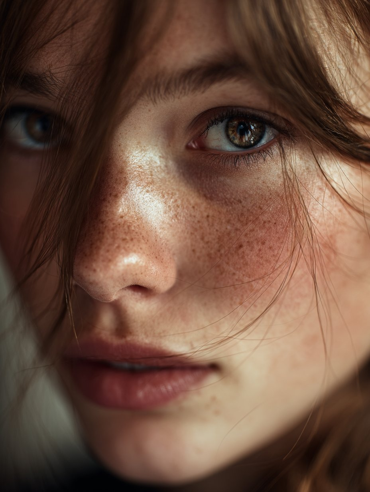
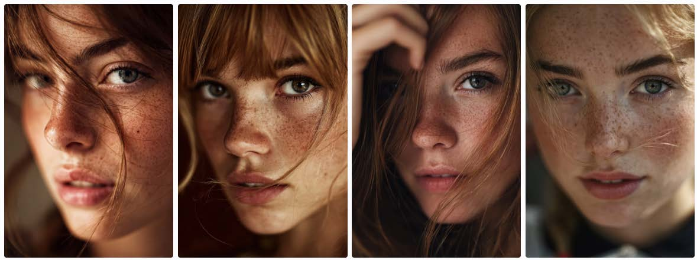
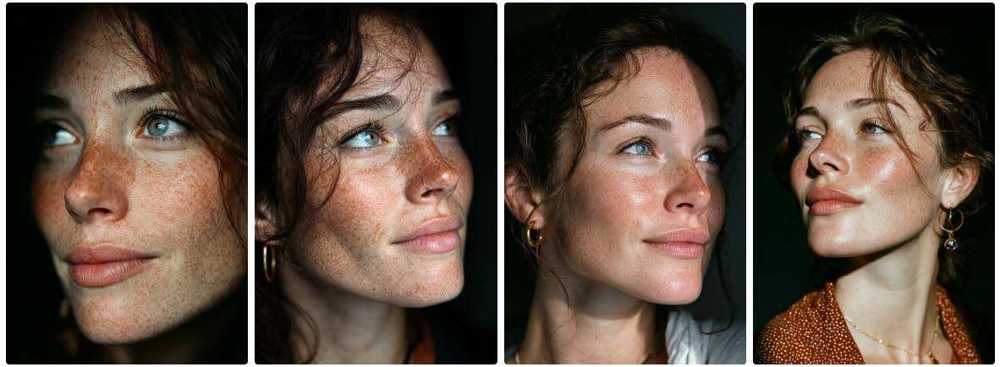
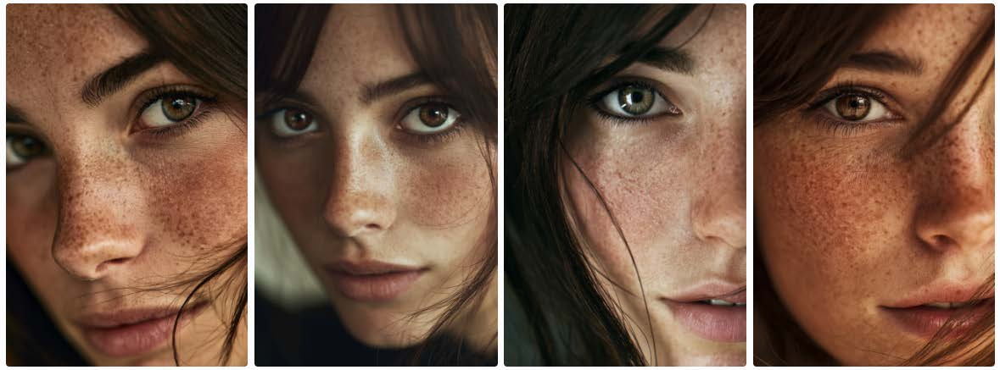
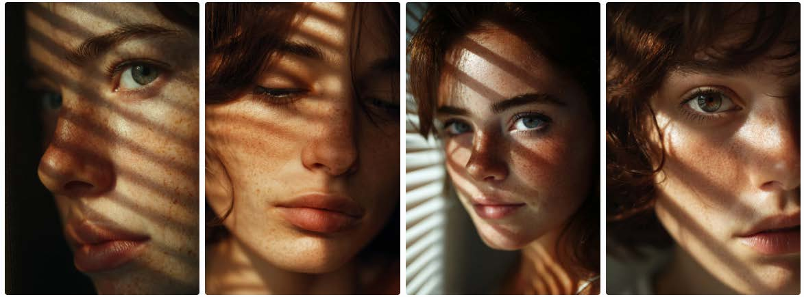
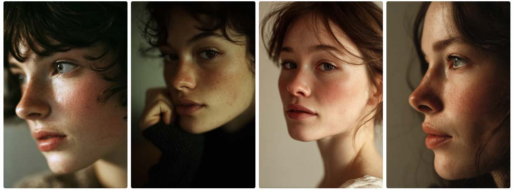
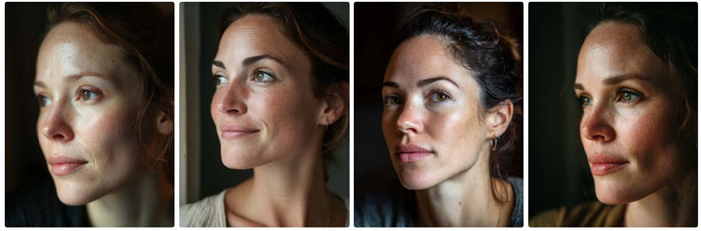

przykładowe efekty
Tak wygląda realistyczna skóra w praktyce.
Wszystkie poniższe obrazy zostały wygenerowane przy użyciu promptów z tej biblioteki.


Twoje zdjęcia AI wciąż wyglądają zbyt idealnie? Oto jak zatrzymać efekt „plastikowej skóry" — 3 konkretne kroki i gotowe prompty do skopiowania.
Dając jasne instrukcje, dostaniesz „zdjęcie", nie render. Oto jak to zrobić.
Nie próbuj tworzyć idealnego piękna. AI domyślnie generuje wygładzone, „idealne" twarze — bo właśnie tego spodziewała się po słowie „beautiful". Odwróć to założenie i skup się na mankamentach, które budują realizm.

Posługuj się językiem, który AI „rozumie" — podaj konkretny sprzęt fotograficzny. Model interpretuje te informacje jako sygnał „realna fotografia" i generuje obraz z charakterystyką optyczną danego obiektywu i filmu.

Niejasny prompt da wynik przypadkowy i przeciętny. Nie pozwól AI zgadywać — zaplanowany kadr nie pozostawia miejsca na słabe kompozycje. Im precyzyjniej opiszesz typ fotografii, tym bardziej spójny i zamierzony efekt uzyskasz.
Zamień te zwroty na ich realistyczne odpowiedniki — różnica jest natychmiastowa.
Kliknij „kopiuj" — do schowka trafi pełny prompt razem z parametrami Midjourney.
Portrait of a young woman, Canon 85mm f/1.2 lens, DSLR, high-resolution, natural lighting, shallow depth of field, visible pores, realistic skin texture, subtle imperfections, freckles, catchlight in eyes, realistic hair strands, candid moment, unretouched, no watermarks, no blur, editorial fashion photography

Candid portrait of a woman in her 30s, natural window light, visible skin texture and pores, slight shine on forehead, minimal makeup, Fujifilm Pro 400H, slight film grain, unedited RAW photo

Ultra-realistic portrait of a young woman with brown eyes, Canon 85mm f/1.2 lens, DSLR, high-resolution, natural lighting, shallow depth of field, visible pores, realistic skin texture, subtle imperfections, freckles, catchlight in eyes, realistic hair strands, candid moment, unretouched, no watermarks, no blur, editorial fashion photography

No makeup look, daylight portrait, visible pores, light freckles, uneven tone, natural hair texture, warm sunlight through window blinds, soft focus edges, 35mm handheld shot, photojournalistic realism

Portrait 3/4 angle, 50mm lens, soft morning light, neutral background, subtle imperfections, small wrinkles near eyes, natural blush, micro texture on skin, film tone, handheld feel

Candid portrait of a woman in her 30s, natural window light, visible skin texture and pores, slight shine on forehead, minimal makeup, shot with Canon 5D Mark IV, 85mm lens at f/2.8, ISO 200, slight film grain, unedited RAW photo, documentary style, slightly off-center composition

Wszystkie poniższe obrazy zostały wygenerowane przy użyciu promptów z tej biblioteki.
Pokazuję tutoriale i inspiracje dla kreatywnych twórców wspieranych AI. Dołącz do społeczności.
Obserwuj na Instagramie